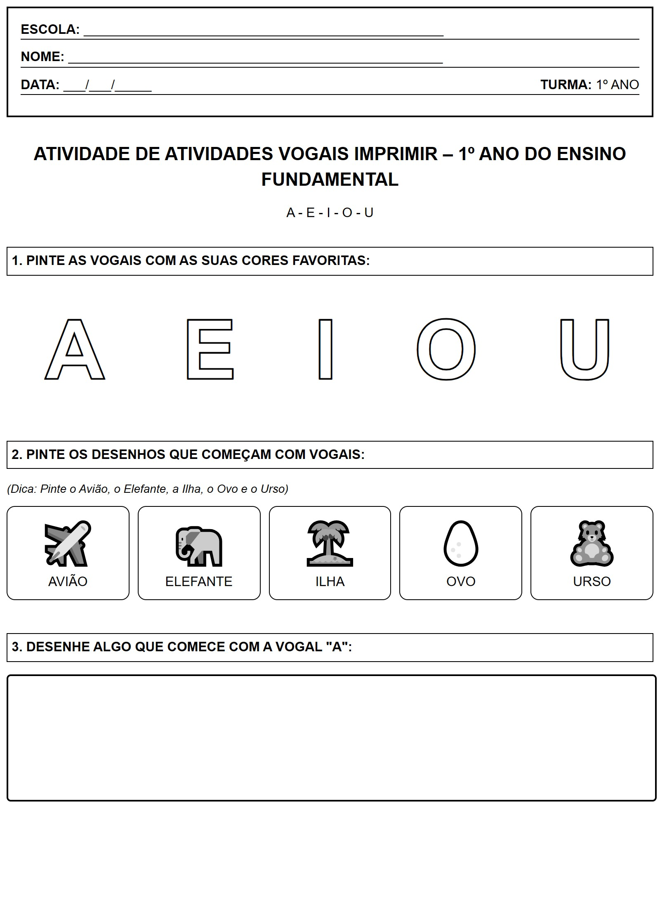

← Voltar ao Portal
ESCOLA:
_________________________________________________
NOME:
___________________________________________________
DATA:
___/___/_____
TURMA:
1º ANO
Atividade: As Vogais para Colorir
A - E - I - O - U
1. PINTE AS VOGAIS COM AS SUAS CORES FAVORITAS:
A
E
I
O
U
2. PINTE OS DESENHOS QUE COMEÇAM COM VOGAIS:
(Dica: Pinte o Avião, o Elefante, a Ilha, o Ovo e o Urso)
✈️
AVIÃO
🐘
ELEFANTE
🏝️
ILHA
🥚
OVO
🧸
URSO
3. DESENHE ALGO QUE COMECE COM A VOGAL "A":
Visualização da Folha de Atividade
